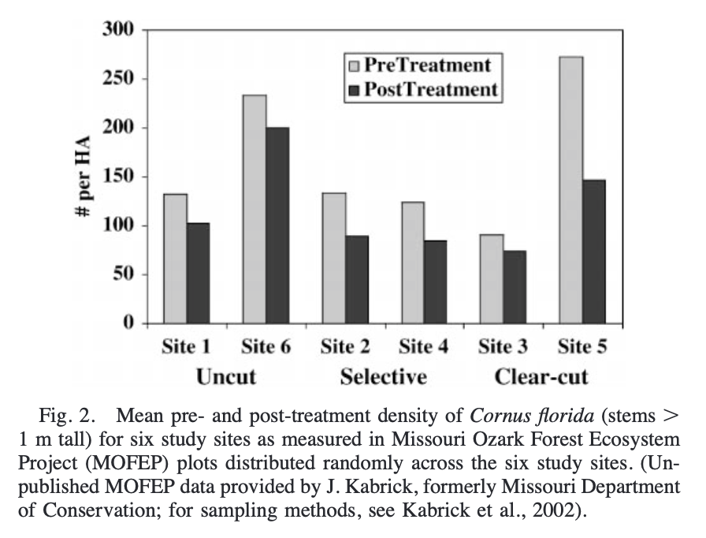

Abstract
Anthropogenic landscape change can disrupt gene flow. As part of the Missouri Ozark Forest Ecosystem Project, this study examined whether silvicultural practices influence pollen-mediated gene movement in the insect-pollinated species, Cornus florida L., by comparing pollen pool structure (Phi(st)) among clear-cutting, selective cutting, and uncut regimes with the expectation that pollen movement should be least in the uncut regime. Using a sample of 1500 seedlings - 10 each from 150 seed parents (43 in clear-cut, 74 in selective, and 33 in control sites) from six sites (each ranging from 266 to 527 ha), eight allozyme loci were analyzed with a pollen pool structure approach known as 2Gener (Smouse et al., 2001; Evolution 55: 260-271). This analysis revealed that pollen pool structure was less in clear-cut ((Phi) over circle (C) = 0.090, P < 0.001) than in uncut areas ((Phi) over cap (U) = 0.174, P < 0.001), with selective-cut intermediate ((Phi) over circles = 0.125, P < 0.001). These estimates translate into more effective pollen donors (N(ep)) in clear-cut (N(ep) = 5.56) and selective-cut (N(ep) = 4.00) areas than in uncut areas (N(ep) = 2.87). We demonstrate that Phi(C) less than or equal to Phi(S) less than or equal to Phi(U), with (Phi) over circle (C), significantly smaller than (Phi) over circle (U) (P < 0.034). The findings imply that, as long as a sufficiently large number of seed parents remain to provide adequate reproduction and to avoid a genetic bottleneck in the effective number of mothers, silvicultural management may not negatively affect the effective number of pollen parents, and hence subsequent genetic diversity in Cornus florida.